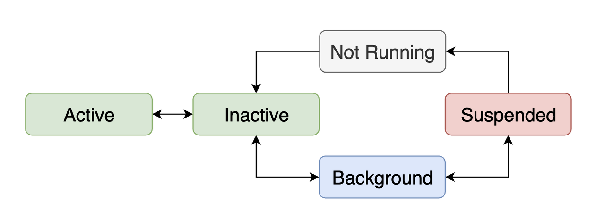
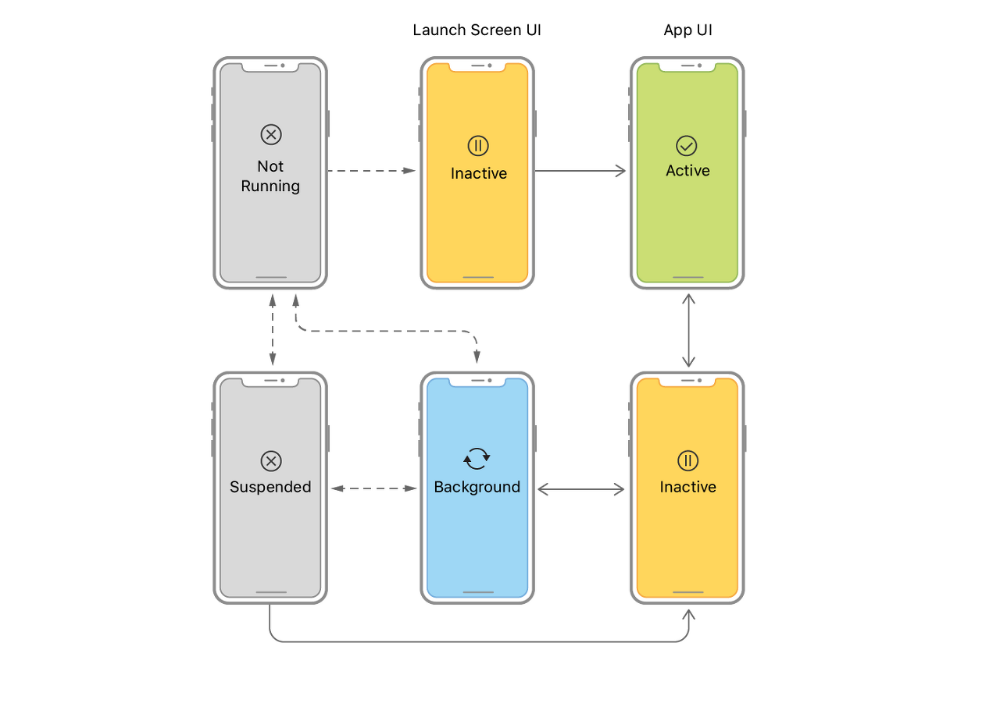
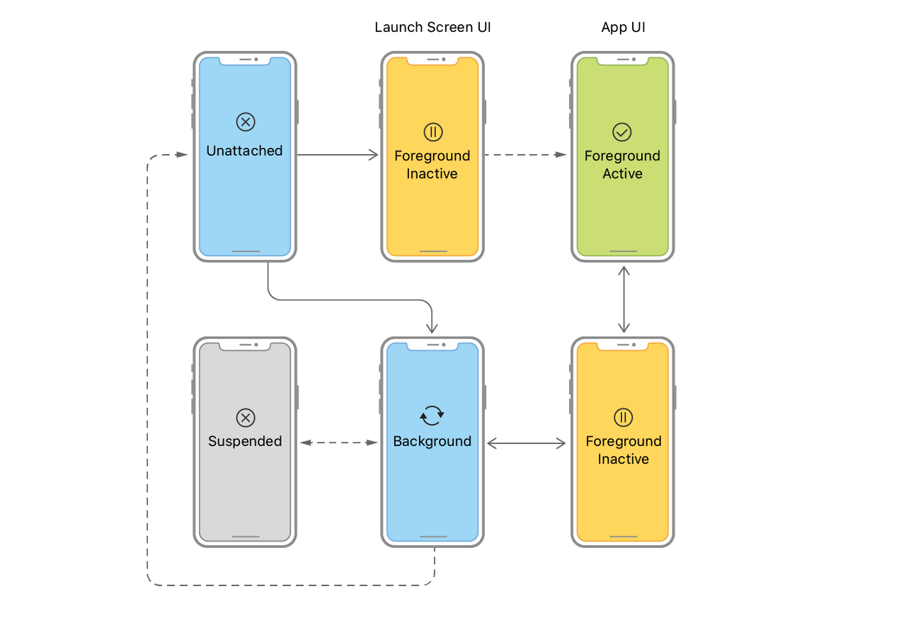

Application Lifecycle
iOS app의 실행부터 종료까지 app의 상태 변화와 생명 주기
Table of Contents
App State
App은 최초 실행부터 종료되기까지 5가지 상태(state) 에 놓이게 된다.
Not running
App 실행 전 또는 종료된 상태Inactive
App이 실행되었으나 사용자 event는 처리할 수 없는 상태
(e.g. 멀티태스킹 화면, 앱 실행 중 전화가 올 때, 특정 알림에 의해 app이 잠시 사용할 수 없는 상태에 놓일 때 등)Active
App이 실행되고 사용자가 event(e.g. touch, gesture)를 발생시켜 app을 실제로 사용할 수 있는 상태Background
App이 화면에 나타나지는 않았지만 실제로 동작은 하고 있는 상태
(e.g. Home screen으로 나갈 때, 음악 앱을 꺼도 노래가 재생됨, 앱이 닫혀있는 동안 서버와 데이터 동기화)Suspended
App을 재시작할 때 빠르게 load하기 위해 memory상에 관련 data만 저장해 둔 상태. Device의 memory가 부족해지면 suspended 상태의 app data를 가장 먼저 해제한다.(a.k.a refresh)
(e.g. Background 상태에서 다른 작업을 하지 않을 때 Suspended 상태로 전환)
각 상태는 아래 그림처럼 전환될 수 있다.
- Active 상태로 전환될 때는 반드시 Inactive 상태를 거친다.
- Active와 Inactive 상태를 통틀어 Foreground 상태로 분류한다.

Application Lifecycle
iOS 시스템은 app state가 전환될 때 app에 관련된 notification을 보낸다. UIApplication object는 iOS 시스템으로부터 notification을 받는 시점에 개발자가 custom behavior를 추가할 수 있도록 delegate를 통해 notification을 전달한다.
iOS 12 이전까지는 UIApplicationDelegate가 UIApplication으로부터 시스템 notification을 전달받는 object로 사용되었다. AppDelegate는 UIApplicationDelegate protocol의 구현체로, app의 특정 상태 전환 시점에 custom code를 추가할 수 있다.
1 | let delegate = UIApplication.shared.delegate as? AppDelegate |
iOS 13 이후부터는 Scene 개념이 도입되면서 앱의 실행/종료를 제외한 View Lifecycle과 관련된 notification을 UISceneDelegate가 담당하게 되었다.
1 | let delegate = UIApplication.shared.connectedScenes.first?.delegate as? SceneDelegate |
만약 Scene을 사용하지 않는다면, 이전처럼 UIApplicationDelegate가 lifecycle notification을 모두 처리하고 UISceneDelegate에는 notification을 전달하지 않는다.
App-Based Lifecycle

UIApplicationDelegate는 app state 전환과 관련하여 7가지 notification을 전달한다.
Application Launch & Terminate
1 | // Not Running -> Inactive |
application(_:willFinishLaunchingWithOptions:)
Launch process가 시작된 직후 호출application(_:didFinishLaunchingWithOptions:)
Launch process가 끝나고 시작되기 직전 호출applicationWillTerminate(_:)
App이 종료되려고 할 때 호출(be about to terminate)
Responding to App Lifecycle Events
1 | // Inactive -> Active |
applicationDidBecomeActive(_:)
App이 active state가 되었을 때 호출(has become active)applicationWillResignActive(_:)
App이 inactive state 되려고 할 때호출(be about to become inactive)applicationDidEnterBackground(_:)
App이 background state가 되었을 때 호출(is now in the background)applicationWillEnterForeground(_:)
App이 foreground(inactive-active) state가 되려고 할 때 호출(is about to enter the foreground)
Scene-Based Lifecycle

UISceneDelegate는 scene과 관련된 app state 전환에 대해 notification을 전달한다.
Scene Connect & Disconnect
1 | // Unattached -> Inactive |
scene(_:willConnectTo:options:)
Scene이 app에 연결(attach)될 때 호출. App에 scene이 추가된다는 것을 알린다.sceneDidDisconnect(_:)
Scene이 app과 연결이 끊어질 때(unattached) 호출. App에서 해당 scene이 연결 해제되었음을 UIkit에 알린다.
Transitioning to Foreground & Background
1 | // Inactive -> Active |
sceneDidBecomeActive(_ scene: UIScene)
Scene이 active 상태가 되었음을 알린다. 사용자 event를 받을 수 있게 됨.sceneWillResignActive(_ scene: UIScene)
Scene이 active state에서 벗어나려고 함을 알린다(be about to resign active state). 사용자 event를 받지 못하게 됨.sceneDidEnterBackground(_ scene: UIScene)
Scene이 background에서 실행되고 있음을 알린다. Scene이 더 이상 화면에 나타나지 않음.sceneWillEnterForeground(_ scene: UIScene)
Scene이 foreground에서 동작하려고 함(be about to begin running in foreground)을 알린다. 사용자가 scene을 볼 수 있게 된다.